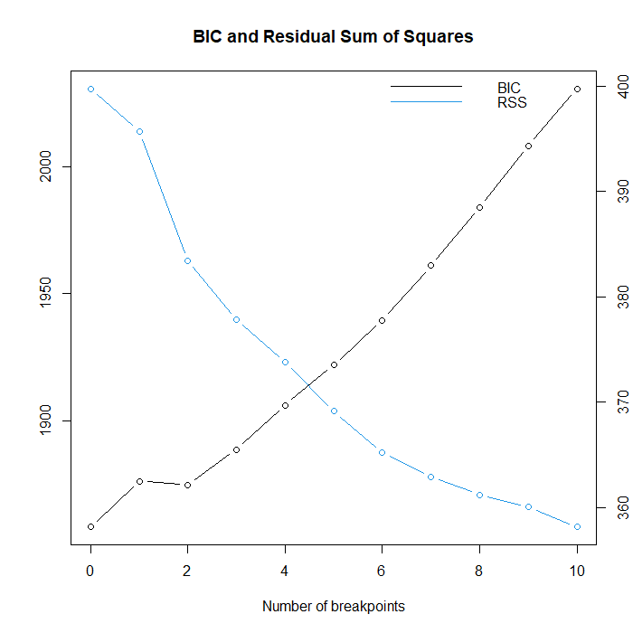
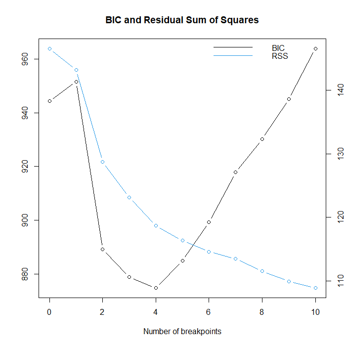
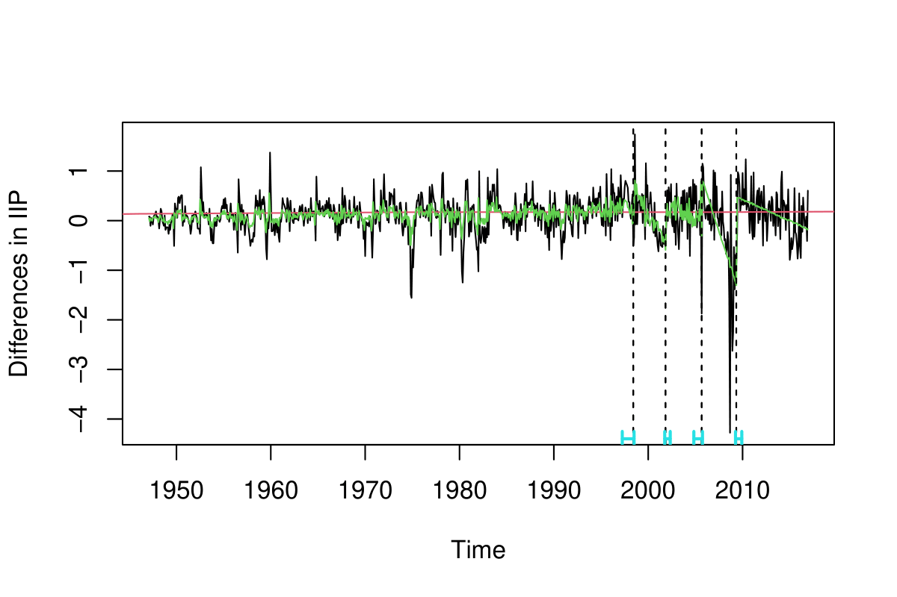
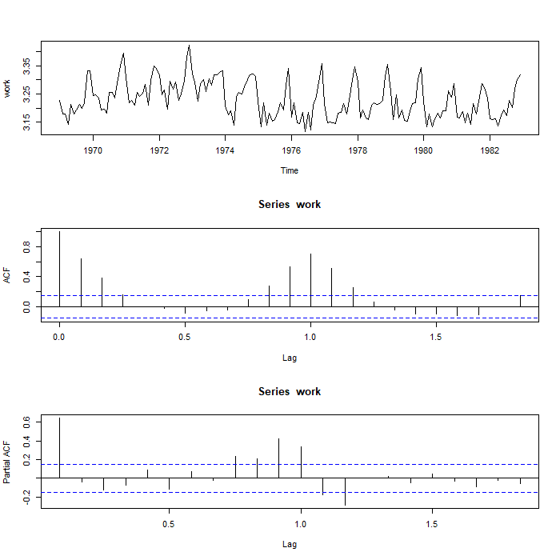
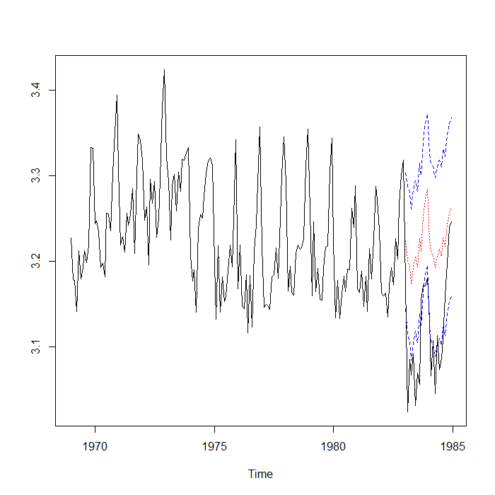
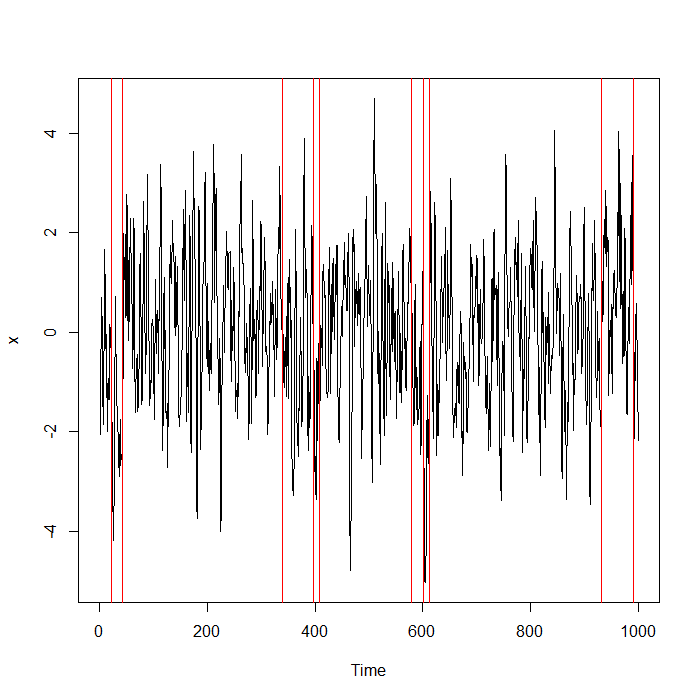
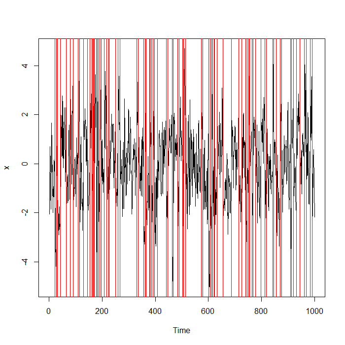
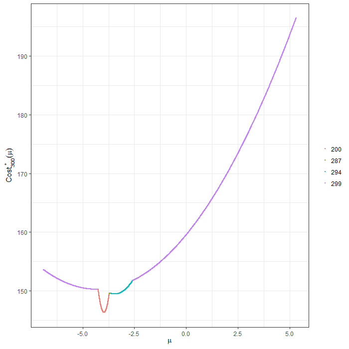

Assignment 10: Breakpoint Models
Fred Industrial Production Index
Production Index
 The first graph shown is just the trending industrial production index collected by FRED. This graph is a great visualization as it has all the necessary components without looking messy.
The first graph shown is just the trending industrial production index collected by FRED. This graph is a great visualization as it has all the necessary components without looking messy.
BIC of Breakpoint models
The next couple graphs deal with breakpoint models, where now we want to choose the model that has the least amount of breakpoints in it, as the lower our Bayesian Information Criteria (BIC) is, generally speaking, the better the model is.

This first graph uses data of the production index from 1947 to current time, and it suggests that there are no breakpoints in the graph. This graph is an excellent diagnostic and visualization tool, but the only thing that I would change would be to slightly alter the title of the graph so that it is easier to tell which model this is. But, it seems there are command limitations from this, so external methods are likely needed.

This next graph uses data from 1947 to 2016, at it suggests that there should be 4 breakpoints in the model. This graph is similar to the previous one visually speaking, only external methods to identify this graph as opposed to the other one would be nice, but there are some command limitations.
 This graph shows there those predicted breakpoints are. The black line is the raw data, the green line is the predicted different in index, and the vertical dotted lines are the breakpoints, with a confidence region in blue at the very bottom. For this graph, a legend is necessary as there are quite a few different things going on within the graph, so some help understand which is what would be very helpful.
Seatbelts

This graph shows several things. First, the log10 of the data before car manufactures were required to install seatbelts into cars of car deaths. The second and third graphs show the importance of different lag variables to create a time series model. The only change I would make to this model is just changing the y axis label of the first graph to log10(Deaths) and putting a title in just to clarify the graph.

This graph shows the prediction of the next 2 years of data in red with the confidence region shown in blue against the actual next 2 years of data, shown in black. The only change I would add to this graph is maybe a legend in the bottom left, but The graph is likely straightforward enough as is.
RW Intervention
For this example, fit.inf.L0 bombed R, and I really couldn’t figure out why it was doing that, as a result I was unable to properly replicate some plots.
Changepoint estimation
This first 2 graphs show how change point estimation works using lambda criteria and different estimation methods.

This first method shows the estimated change points using Binary Segmentation, and a total breakpoints of 10. The red lines shows the estimated breakpoints in the model, while the black the data. I think that this model is difficult to understand, but i believe that the interpretation of this is were breakpoints likely are, which in this case may be 4-5 locations, which is were the red lines are grouped together. As a result, if I were showing the graph, varying the color of different grouped lines may help people understand that some of the estimations are near each other for a reason.

This second graph shows the estimated change points using L0 segmentation and a lambda of 4. This graph is a hot mess, likely because lambda may need to be bigger, but I don’t fully understand this method anyways.
Cost Function

I think this data shows at which change points the cost of choosing mu is minimized, and we want to minimize that. In this case, the cost of mu is minimized at around 3, with the changepoint at 200, which is what is expected as the data was set up in that way. I do not really understand this graph, so I cannot tell you what is shown or why, and how it can be improved.